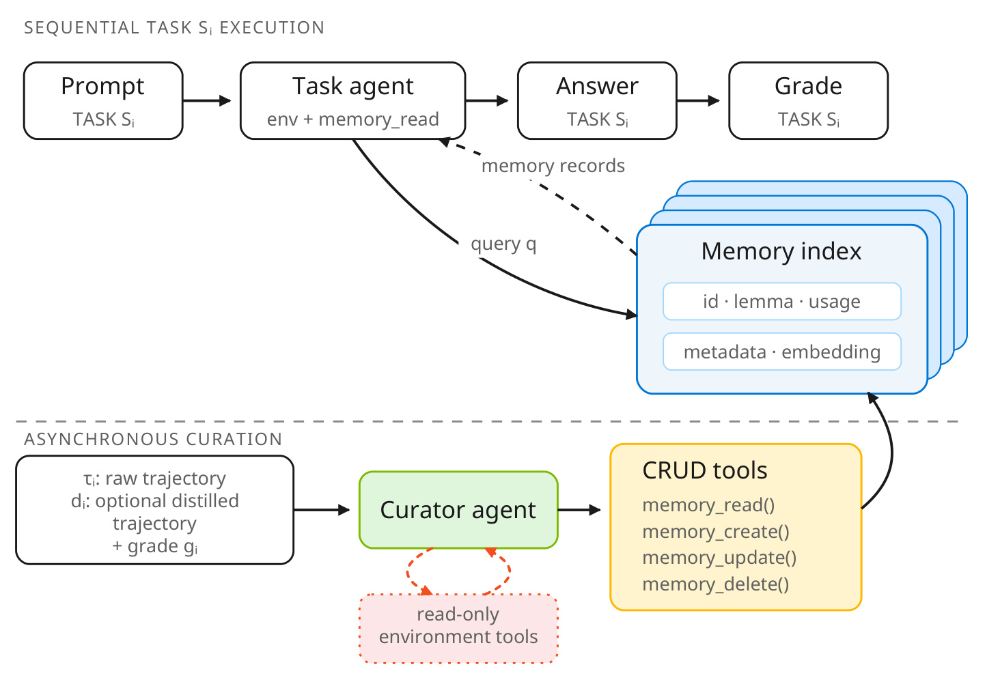
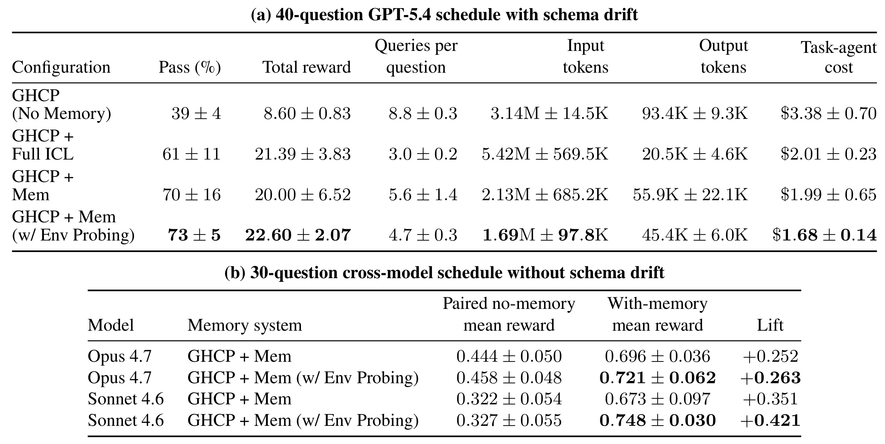
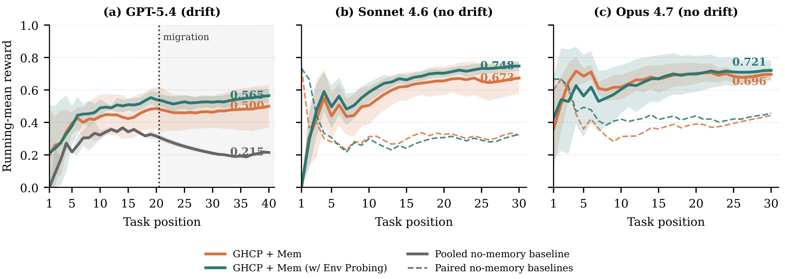
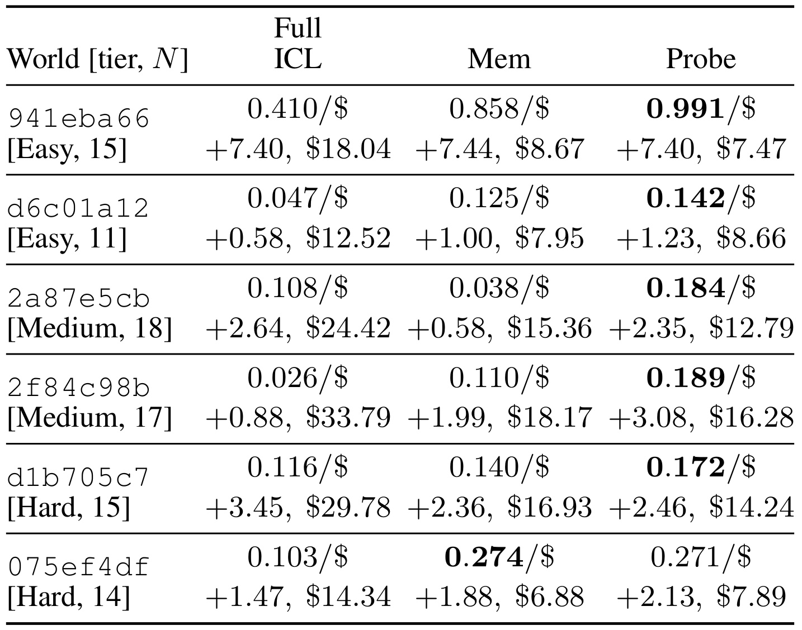
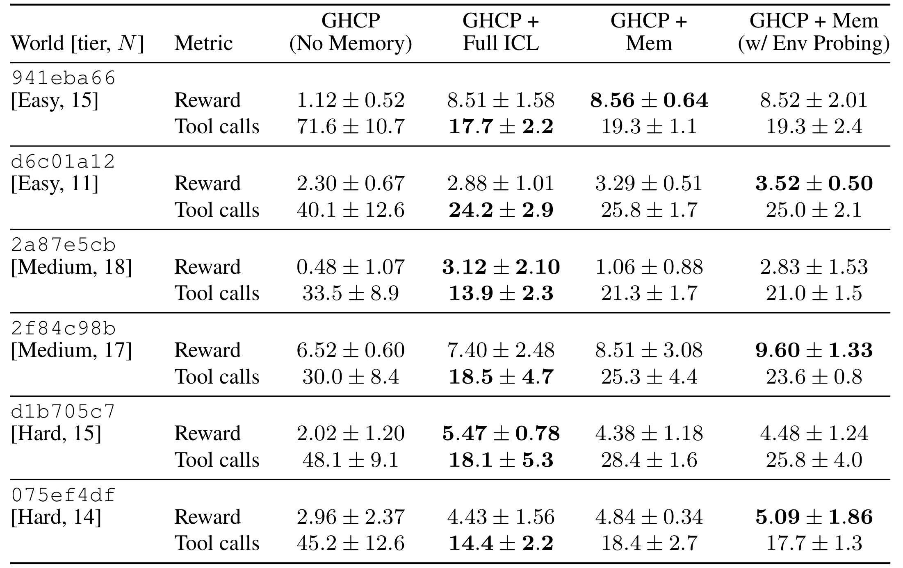
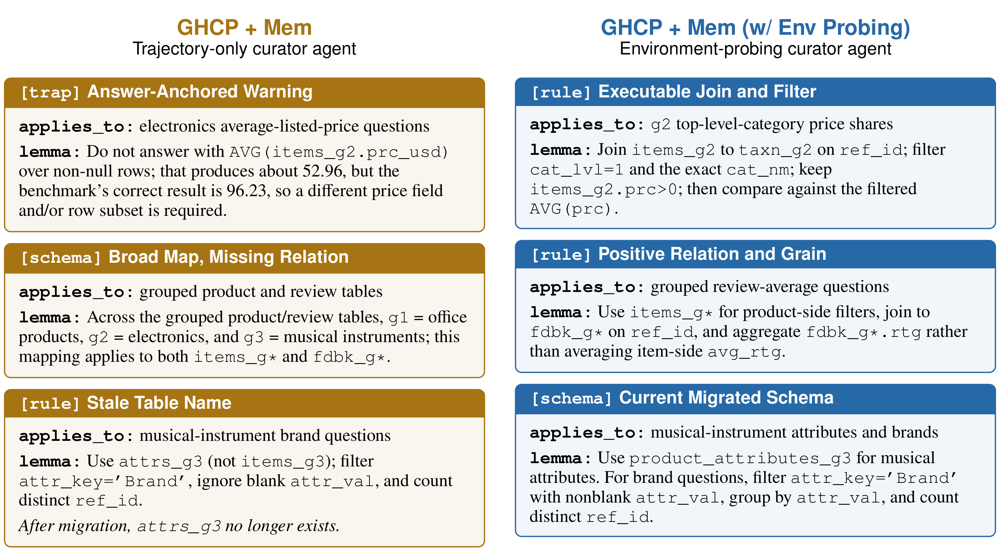

Grounding Agent Memory: Environment-Probing Curation for Enterprise Agents
一作/团队主机构：Microsoft Corporation。无其他首页机构。主类别：LLM。首版日期：2026-09-10（UTC）；本轮访问：2026-09-14（Asia/Shanghai）。
论文链接：arXiv:2609.11060。代码状态：未核验到本工作独立官方代码；引用的软件/其他工作不算本文开源。
本文研究企业代理如何在跨任务记忆写入之前，用已有环境的只读接口核对经验。作者保持回答任务的代理、检索器、记忆格式和模型参数不变，只给异步记忆整理器增加有限的环境访问，让它把一次执行中的线索转化成可以复用、适用范围清楚且仍然有效的记录。
只依据已完成轨迹整理记忆，可能保留错误、把局部证据过度泛化，或继续使用已经过期的知识。一条轨迹只是对环境不完整、且可能带有错误的观察；若把核验推迟到后续任务，回答代理仍需反复花工具预算检查这些不确定记忆。
1. 背景和问题
1.1 跨会话经验为什么仍会失效
企业代理面对的许多工作不是彼此独立的问答。今天查一张业务表，明天解释相同数据库中的另一项指标；今天为咨询项目寻找一份经营表，之后又要结合这份表计算工厂效率。这些任务共享表结构、目录位置、字段编码、关联键和计算习惯。如果每次会话结束就清空经验，代理会在下一次重新枚举文件、检查表头、试探单位，把工具预算反复花在环境发现上。外部持久记忆因此有明确用途：把可迁移的信息留在会话之外，让新任务按需取回。这里的学习发生在外部记录中，基础模型参数保持固定，不能把它理解成模型权重已经通过连续训练获得新能力。
然而，能保存经验与能保存可靠经验是两个不同的问题。一次任务轨迹只覆盖代理实际走过的路径；没有查询的表、没有打开的附件、没有检验的过滤条件，不会因为总结得更流畅而变成已知事实。即使任务最终成功，过程中也可能先使用错误单位，再通过别的线索碰巧修正；如果整理器把中间猜测写成规则，后来检索到它的代理反而容易重复错误。反过来，一次失败也可能包含正确的目录映射和有用的关联键，不能一概丢弃。终局评分提供的是任务结果信号，不是轨迹每句话的真值标记，这构成论文讨论的第一层证据问题。
第二层问题是经验的可操作性。记录“此前这个答案不正确”，可以防止机械重复答案，却没有告诉下一次应该查询哪个表、使用什么关联条件、在哪一层聚合。记录“这些文件大致属于经营分析”，能缩小搜索范围，但未必能帮助代理找到真正的月度站点数据。负面警告、笼统地图和可执行步骤都可以被放进同一种记忆存储，却给后续执行带来很不一样的价值。作者因此把目标落在可靠、可迁移、可行动的少量记录上，强调应保存程序、关系、惯例与限定范围的警告，而不是保存某道题的答案或判分器措辞。
第三层问题来自环境变化。字段昨天存在，并不保证数据库迁移后仍然存在；目录中旧版工作簿仍然可读，也不代表其中口径适用于当前项目。基于旧轨迹反复反思，只能重组旧观察，无法确认当前世界是否已经改变。论文使用的数据库测试在任务流中途修改表结构，使这类风险不再只是抽象担忧：过去合法的表名会失效，列会拆分，还会出现软删除语义。如果记忆保留过期表名，后续代理要么执行失败，要么必须重新核验，这会抵消原先节约的探索成本。
1.2 既有记忆路线的证据边界
原文将相关方法区分为事实型记忆和程序型记忆。前者重视用户、环境或实体的事实，围绕记录创建、更新、召回、分层、图结构和时间信息组织知识；后者从成功与失败轨迹提炼技能、工作流、策略或反思。两条路线都可以使检索更精准、表示更紧凑、更新更谨慎，但它们常见的任务后整理仍然主要依赖既有记录、历史轨迹、评分和使用信号。本文指出的缺口不是它们完全不能纠错，而是当错误涉及未访问状态或者新发生变化时，整理器手里缺少可以独立确认的环境证据。
这种差别也解释了为什么全文上下文回放并不自动解决问题。把所有旧轨迹放进提示词，确实能把丰富的历史线索带给下一次任务，却同时带来上下文随任务数增长、冗余过程干扰和旧错误继续出现的风险。索引式记忆把轨迹压缩为可检索的短记录，能减少上下文增长，但压缩本身仍不能创造证据。摘要器也可能把“在当前样本上似乎成立”压缩成没有范围限定的结论。本文所加的只读探测，针对的正是从历史观察到持久规则之间的验证环节，与更强的检索或更复杂的记忆表示可以组合。
将核验放在任务执行时当然也是一种解决办法：每次取回记忆后，重新检查对应表或文档，再决定是否采用。但这会让每个用户请求都承担核验成本。论文选择把部分工作移到任务结束后的整理阶段，让同一份经验证的经验服务于后续相关任务。这里存在可摊销性前提：未来任务需要持续访问相似环境，记录才有机会重复使用。若每个任务来自完全不同的世界，或者环境变化快于整理和复用速度，新增探测不一定能够收回投入。这一前提在本文的共享数据库和共享文档世界里成立，不能直接推广到任意开放域任务。
1.3 本文究竟检验了什么
作者提出环境探测式整理，在现有异步整理器上添加最小权限的只读工具，让它提出候选记忆后针对疑点验证，再决定创建、更新、缩小范围或删除。关键比较应当是普通索引记忆与加入探测后的索引记忆，因为这两组在任务期模型、工具和读取接口上保持一致。无记忆到探测记忆的比较回答的是整套记忆系统有没有帮助，其中同时包含记忆本身的巨大收益；它不能单独证明增加探测的边际价值。后文会分别报告这两个层次，避免把摘要中的大幅提高全部归因于新增接口。
评估覆盖隐藏数据库探索与改编的管理咨询任务。前者检验模式、单位、关联与迁移后规则；后者检验文件发现、表格布局、跨工作簿计算和工具调用惯例。两类场景都接近企业代理的工作内容，但论文运行在基于 GitHub Copilot SDK 的生产风格实验框架中，不能据此说已经在实际企业流量全面部署。其贡献更准确地说是一个可接入现有代理栈的边界设计及相应实验：允许整理器获得额外可审计证据，同时保持用户任务的读取界面紧凑，并明确限制生产写权限。
2. 方法
2.1 在线任务与只读记忆
原文方法首先定义一个顺序到来的相关任务流。每个任务开始时环境处于某个状态，下一次环境可能发生未通知代理的变化；当前任务必须先关闭，下一任务才会公开，而且已经完成的任务不再重做。每个任务都创建新会话，模型参数固定。无状态配置没有共享历史；有状态配置保留外部记忆索引，但任务代理只能通过读取接口检索少量相关记录。公式（1）概括任务阶段的输入与输出：
符号解释：$S_i$ 是第 $i$ 个任务，$E_i$ 是它开始时的环境状态，$\mathcal{T}_{E_i}$ 是可用环境工具，$M_{i-1}$ 是此前已提交的记忆存储，$R$ 表示按请求召回记录的检索器，$A_{\theta}$ 是参数固定的任务代理，$\tau_i$ 是原始执行轨迹。无记忆配置省略检索项。轨迹不仅包含最后答案，也包括请求、记忆读取、工具调用、环境观察和代理消息，因此它能支持任务后分析，但不能被默认为环境全貌。任务代理没有记忆创建、更新或删除工具，这是控制实验与运行边界共同依赖的约束。

Figure 1 把顺序任务放在上半部，把异步整理放在下半部，中间横向虚线就是权限与生命周期的分界。上方从请求到回答再到评分依次发生，任务代理可以访问环境并检索右侧索引中的记录，却没有指向索引写入的动作。下方整理器接收已完成轨迹及评分，通过单独的 CRUD 工具改变索引，红色虚线环只增加在整理器与只读环境工具之间。读图时应注意，右侧叠放的记忆卡并不意味着把整段上下文全部塞给下一任务，而是记录经过索引后按查询返回。原图把蒸馏标为可选流程，而本文报告的两种索引记忆实验都启用了同样的非写入蒸馏，避免把有无蒸馏混进探测对比。
这张角色图还解释了“异步”一词的实际边界：整理不进入已经关闭任务的用户回答链路，但实验要求整理在下一个任务公开之前完成。因此不能从图中推断系统允许任意多个任务并发读取尚未整理完的记忆，也不能把异步等同于没有时间成本。论文通过任务间完成提交，避免未来任务泄漏到当前记忆，以及部分写入被后续执行读取。若要部署到真实并发工作流，还需要实现适当的版本或提交约束；这是根据原文边界得到的工程要求，原文没有测量高并发下的一致性开销。
图里的只读限制还需要分对象理解：整理器对业务环境只读，但对自己的记忆索引仍然拥有写权限；否则新观察根本无法进入持久经验。黄色工具框中的删除和更新作用于记忆，不能据此推断它可以删除业务工作簿或修改生产数据库。反过来，上方任务代理在 APEX 中原有的材料制作能力也没有因为这个新增模块而消失，实验只是把新增权限限定给后台整理器，保持前台能力相同。
2.2 任务后整理与非写入蒸馏
任务结束后另起一个整理器会话，它不是原任务代理继续聊天，也不负责重新回答当前任务。系统先用不带写权限的蒸馏器压缩原始轨迹，得到公式（2）的证据包：
符号解释：$D_{\psi}$ 是独立的轨迹蒸馏转换，$\psi$ 标记其模型配置，输入 $\tau_i$ 为完整原始轨迹，输出 $d_i$ 为压缩证据。蒸馏器不接收终局评分，没有环境工具与记忆工具，也不能提出或提交持久记录。它需要保留任务要求、已检索记忆、关键行动与观察、成功和失败路径、答案、仍未验证的假设，以及值得重新访问的资源。附录 D.1 的提示词明确要求把轨迹当作部分证据，不能补充轨迹没有出现的事实。原始轨迹仍作为支持材料可供整理器查阅，压缩包只是主要视图，而不是唯一可追溯来源。
整理器随后获得压缩证据、终局反馈、相关旧记录及可用的原始轨迹指针。基础版本拥有记忆读取、创建、更新和删除能力，但没有实时环境查询能力。每条记录用类别、置信度、适用范围和简洁 lemma 组织核心内容，并携带来源、效用和使用元数据；类别包括模式、规则、陷阱、结构、策略与交互。这里的 lemma 可以理解为一条可执行或可检验的经验命题，而不必是数学定理。整理器先提出候选，核对证据支持、迁移价值、范围、行动性、时效和重复度，然后与已有索引协调：创建有支持的新记录，细化或合并已有记录，缩小过宽范围，纠正或删除矛盾记录，也可以跳过不值得保存的内容。
记录质量的目标是少量强证据经验，而不是尽可能多地记住历史。 一个通过评分的任务不能自动验证所有中间假设，一个孤立数值也不能自动提升为跨任务规则。附录提示词特别要求避免写下答案、rubric 措辞或偶然值，优先使用告诉下一代理该如何做的正向程序。由此可以看出，普通记忆版本已经包含相当强的整理原则；论文的新增机制不是第一次提出谨慎写记忆，而是在这些原则遇到缺乏证据的情况时，允许整理器向当前环境查证。若只比较无记忆与最终系统，就会遗漏这个已经较完整的中间基线。
2.3 提出候选、定向探测与提交
环境探测版本保留任务代理、检索、蒸馏设置、整理器主体、记录结构和 CRUD 规则，只增加只读环境接口与核验提醒。附录 D.3 用提示词组合式表示这个变化：
符号解释：$P_{\mathrm{curator}}$ 是基础整理器提示词，$A_{\mathrm{access}}$ 声明新增只读工具权限，$A_{\mathrm{verify}}$ 要求在正确性、适用范围、时效或行动性不明确时先验证，$P_{\mathrm{probe}}$ 是完整探测提示词。这里的加号表示插入提示词块，不是数值相加，也不是训练损失。两个新增块强调工具不能改变环境、不能消耗任务代理预算、不能暴露未来任务或标签；探测围绕已有候选记忆开展，不能无假设地漫游，也不能提前解下一题。
具体流程是先提出候选，再找不确定点，再发出针对性只读调用。例如怀疑价格单位与列名有关，就检查真实值和编码；怀疑关联关系只在当前切片成立，就查询未访问的切片；怀疑数据库迁移让表名失效，就重查当前结构；已有步骤过长，就验证更短路径能否提供同样证据。数据库环境允许查看表、连接键、编码及迁移字段，文档环境允许核查文件位置、材料相关性、工作簿内容和工具惯例。观察结果可以加强原命题，也可以迫使整理器缩小范围或删除旧记录，所以探测不是给每条候选寻找支持性材料的单向确认流程。
新增能力的归属是写入记忆之前的证据收集，用户任务本身的能力与读取界面保持不变。 这有助于把实验增量归因于记忆写入质量，但并不意味着全系统计算量不变。探测会新增整理阶段的模型与工具使用，只是这些调用不计入任务代理的预算。运行时可以复用已有连接器或 MCP 服务，沿用身份认证、授权和审计，并限制为最小只读子集；如果没有安全的只读访问面，就回退到仅轨迹整理。只读也不自动保证观察完整或结论正确，候选范围与后续失效仍需管理，原文并未给出形式化真实性保证。
3. 实验结果
3.1 数据、任务顺序与奖励口径
主实验比较四种配置：无记忆 GHCP、回放历史完整轨迹的 Full ICL、普通索引记忆 Mem、以及增加环境探测的 Mem。漂移版 CLBench 共有四十道隐藏 SQLite 数据库问题，在第二十题之后发生未公布的迁移；题目需要发现表、连接键和编码，价格可能是美元或美分，时间可能是毫秒时间戳或 ISO 文本。另有固定三十题、没有迁移的跨模型测试，用来观察收益是否只来自修复过期结构。两种测试不能合并为一条同分布曲线：题量、顺序与模型配置均不同，且无漂移组专门采用固定标准任务顺序。
改编 APEX 从原基准四百八十道独立职场任务中选择管理咨询子集，按领域和共享世界分组，得到六个世界、九十道题，每个世界十一至十八题。它们需要在 PDF、电子表格、文档和幻灯片之间发现资料，处理嵌入图片，通过代码做定量分析，并调用 Archipelago 工具。这种分组让文件位置与计算惯例跨题复用，适合检验持续记忆，但也意味着结果不是原始 APEX 全部任务的正式排行榜成绩。本文没有覆盖原基准完整的法律和财务分析任务，任务之间也不再完全独立。
奖励同时要求正确性与工具效率。原文公式（3）为：
符号解释：$p_i$ 是严格通过标记，只能为零或一；$q_i$ 是基准计入的任务代理环境调用数；$B$ 是预算，CLBench 为十五次 SQL 探索查询，APEX 为一百次工具调用。多评分项任务只有全部标准通过才令 $p_i=1$，失败任务奖励为零。总奖励对任务求和，平均奖励除以题数，所以四十题的总奖励二十二点六与曲线终点零点五六五是同一结果的两个尺度。不能把这个奖励当成纯准确率：两个都答对的系统，调用较少的一方也能取得更高奖励。
附录 B.3 另给出仅用于 APEX 轨迹诊断的部分标准奖励：
符号解释：$K_i$ 是该题全部评分项数量，$k_i$ 是通过的项数，其他符号与主奖励相同。部分标准奖励用于分析路径，不替代主表的严格通过奖励。记忆管理及框架内部调用从 $q_i$ 排除；输入输出 token 和美元成本只覆盖任务响应阶段，蒸馏器、整理器使用量另行跟踪。因此“减少工具调用”与“减少任务代理成本”都不能无条件扩写成“减少端到端总成本”。
主 CLBench 与 APEX 使用 GPT-5.4 的 xhigh 配置，各阶段共享相同基础模型；跨模型无漂移实验使用 Sonnet 4.6 high 和 Opus 4.7 xhigh。记忆使用 e5-base-v2 嵌入。漂移实验每配置五次独立打乱且配对的种子运行；APEX 有状态配置五次，无记忆三次，报告运行级均值与百分之九十五 Student-t 置信区间。无漂移实验每个模型与记忆比较各五次配对运行，表中误差却是运行间标准差。这里需要特别注意：相同的加减号在两个子表中含义不同，不能直接拿区间宽度判断哪个模型更稳定，也不能将曲线阴影当成主表置信区间。
3.2 漂移与跨模型结果
下面的原始 Table 1 将漂移主结果和无漂移跨模型比较放在同一表号下，两个子表均完整保留。先看对照层级，再看具体数字，才能判断主要收益来自哪里。

漂移任务中，无记忆通过率为百分之三十九，总奖励八点六，平均每题八点八次查询，平均每轮四十题的任务代理成本三点三八美元；普通 Mem 已经将通过率提高到百分之七十、奖励二十、查询五点六次、成本一点九九美元。加入探测后，通过率为百分之七十三、奖励二十二点六、查询四点七次、成本一点六八美元。所以摘要里三十九到七十三是整套探测记忆系统相对无记忆的三十四个百分点差异，单独增加环境探测的通过率增量是七十到七十三，即三个百分点。同样，二十到二十二点六是相对普通记忆的奖励增量；它同时受正确性与查询数影响，不能当成准确率增加百分之十三。
Table 1 的另一条重要信息是完整历史回放并没有在所有指标上落后。Full ICL 每题只使用三次 SQL 查询，比探测记忆四点七次更少，总奖励二十一点三九，也高于普通 Mem 的二十；但它输入 token 达五百四十二万，而普通 Mem 为二百一十三万，探测记忆为一百六十九万。Full ICL 通过率为百分之六十一，低于两种索引记忆。这个组合说明完整轨迹中有强可迁移信号，却需要承担不断增长的任务上下文；简短记录减少上下文后还能保持甚至提高通过率，是索引整理有价值的证据。它不证明所有时候压缩都比回放更好，尤其当需要完整细节且上下文仍可承受时，回放仍是有效参照。
统计上，普通 Mem 通过率标为七十加减十六，探测版本七十三加减五；两者总奖励区间也明显重叠。这里可以报告探测版本在本实验中的均值更高、任务查询均值更低，不能凭均值排序宣称通过率提升已具有普遍显著性。作者采用五次运行得到的区间，也不足以刻画所有任务顺序、环境变化和模型随机性的组合。任务代理成本从三点三八到一点六八约减少一半是可从表中计算的响应阶段变化，但如果把探测、蒸馏、记忆存储与维护都加进来，净收益需要另行核算，表中没有给出相同口径的总账。
无漂移子表显示，Sonnet 的普通记忆平均奖励为零点六七三，探测版本零点七四八；Opus 分别为零点六九六和零点七二一，说明探测的均值优势不只出现在结构迁移条件。与此同时，普通与探测各自的配对无记忆基线并不完全相同：Sonnet 为零点三二二和零点三二七，Opus 为零点四四四和零点四五八。表中 lift 是每一行减去自己的配对基线，例如 Opus 的两个 lift 为零点二五二、零点二六三；不能把它们相减后与两条记忆均值之差混为一个统计量。正文给出零点零七五和零点零二五的额外均值差，但没有因此证明较弱模型必然收益更大。

Figure 2 的横轴是任务在流中的位置，纵轴是截至该位置的累计平均奖励，并非该题独立奖励。左图的竖线表示第二十题后迁移，探测记忆在边界处已经领先普通记忆，约为零点五四一对零点四八六，最终为零点五六五对零点五零零；无记忆最终零点二一五。迁移后保留领先，与整理器能提前刷新结构记录的解释一致，但由于前半程已经出现差距，不能说最终全部增益都是迁移修复造成的。累计曲线会平滑和混合此前任务影响，若要精确测迁移后的瞬时恢复速度，还需要逐任务或分阶段指标。
中图与右图分别对应无漂移 Sonnet、Opus，实线为有记忆五次运行均值，同色虚线为各自配对无记忆结果。图中阴影展示一个运行间标准差，既不是逐题准确率，也不是百分之九十五置信区间。Sonnet 的探测曲线后段相对普通记忆更高且波动较小，Opus 两条曲线更接近、阴影也重叠较多。比较时应当保留这些不确定性，较合理的结论是两个模型都存在可复用的稳定环境知识，探测在平均奖励上提供了额外收益；图本身不足以支持模型规模与探测收益之间的确定函数关系。
累计平均还会造成一个容易误读的视觉现象：曲线后段变平，不一定是记忆停止产生作用，因为每个新任务的奖励只以当前题数的倒数影响均值。前几题的一个成败会显著拉动曲线，第三十题的一次成败则被此前二十九题摊薄。图中开始阶段的剧烈波动与后段较平滑不能单独证明系统越来越确定；更稳健的阅读方式是把终点对应回表格、把迁移边界与已发生任务区分，并用原文的运行重复和误差口径约束结论。
3.3 APEX收益与任务阶段成本
APEX 的六个世界难度与题数不同，原文先用每美元奖励增量比较任务阶段效率，再在附录给出绝对奖励与调用数。Table 2 的每个格子第一行是相对无记忆基线的奖励增量除以该配置的任务代理成本，第二行分别列出增量和平均每次运行美元开销。

Table 2 中，六个世界乘三种记忆配置，共十八个相对无记忆基线的平均奖励增量均为正。这句话的比较对象是无记忆，并不表示探测十八次击败普通 Mem。若只看探测对普通 Mem，六世界中五个奖励均值提高，一个略降。探测在五个世界获得最高任务阶段每美元奖励增量，例外是世界 075ef4df：普通 Mem 的比值为每美元零点二七四，探测为零点二七一，虽然探测奖励增量更大，但任务成本也从六点八八增加到七点八九美元，使比值略低。这个例外展示了为什么不能用“奖励更好”自动推出“经济性更好”。
最明显的探索摊销出现在容易世界 941eba66。普通 Mem 与探测的奖励增量约七点四四、七点四零，相差很小，探测的任务代理成本却从八点六七下降到七点四七美元，因此比值从零点八五八升至零点九九一。Full ICL 的奖励增量也约七点四，但成本十八点零四美元，导致同一指标只有零点四一。文中还报告该世界无记忆输入 token 为五千三百九十二万，两种索引记忆降至六百五十六万至七百六十七万；这与重复发现目录、工作簿和工具习惯的代价很高相符。这里比较的是每个世界一轮任务流的消耗，不能当成每一道题都花费同样金额。
中等世界 2a87e5cb 的结果则说明探测不保证原始奖励最高。Full ICL 相对无记忆增量二点六四，普通 Mem 零点五八，探测二点三五，完整回放在奖励上更好；但探测成本十二点七九美元，低于完整回放二十四点四二美元，因此任务阶段每美元收益仍由探测领先。另一中等世界 2f84c98b，探测相对普通 Mem 的奖励增量差为一点零九，成本也略低。作者将这种差别解释为轨迹中剩余证据缺口不同：在普通经验已经足够行动时，探测新增价值小；在工作簿位置或计算关系仍不清楚时，独立核验更可能帮助后续任务。由于区间重叠，这属于机制解释，不是已确认的难度分组效应。

Table 3 给出了理解上述比值必须具备的绝对尺度。容易世界 941eba66 的无记忆平均调用为七十一点六次，三种记忆配置降到十七点七至十九点三次，约减少四分之三；中等世界 2f84c98b 则从三十次降至十八点五、二十五点三、二十三点六，减少比例没有前者那么大。摘要中的百分之十六至七十五应准确理解为相对无记忆调用数的减少比例范围，涵盖不同世界及不同记忆系统，并非每个探测配置都达到最大下降。各个世界的题量十一至十八不等，Reward 是该世界总和，不能仅凭总奖励横向判断哪个世界更容易。
在难世界 d1b705c7，Full ICL 奖励五点四七高于普通 Mem 四点三八和探测四点四八，调用也更少，说明完整历史保留仍可能帮到需要复杂细节的任务；探测的优势主要体现在相对普通索引记忆，以及任务阶段成本与收益的组合。世界 941eba66 的探测奖励八点五二略低于普通 Mem 八点五六；世界 2a87e5cb 的增幅较大，但普通 Mem 与探测区间均较宽。只列全局改善方向会遮住这些差异，完整表格提示读者在选择记忆系统时需要同时看成功标准、任务数、工具数、token 和金额，不能把一个综合奖励当成所有部署目标的充分代理。
此外，无记忆组只有三次运行，有状态组五次，表中的置信区间来自运行级 Student-t 统计；极小样本下，某些总奖励的对称区间甚至会延伸到零以下，这属于估计区间形式，而不等于系统产生负的严格失败奖励。本文没有在表中提供探测相对普通 Mem 每个世界差值的单独配对置信区间，因此“全部显著改善”没有证据支持。实际可保留的结论是：共享文档任务中，记忆总体减少重复发现并提高平均奖励，探测进一步改善多数世界的均值和任务阶段经济性，但收益大小随环境明显变化。
3.4 记忆内容与执行轨迹
仅看均值很难知道为什么工具数减少。Figure 3 对照三类代表性记忆内容：旧方法留下答案锚定警告、过于宽泛的领域映射以及迁移后失效表名；探测版本提供可执行关联过滤、正确聚合粒度和当前结构。原文明确这不是逐条原记录的一对一改写实验，卡片文本为布局做了轻度缩写。

第一行左侧警告保留了某次错误均价和正确答案，却没有替代查询流程；右侧则说明应通过 ref_id 连接商品与分类表，限制顶层类别、精确类别名与有效价格，再与过滤后的平均价格比较。第二行左侧知道三个分组对应办公、电子与乐器，但没有说明评论均值该从哪里算；右侧明确商品侧负责过滤、评论侧负责评分聚合，避免直接平均商品缓存评分造成粒度错误。第三行左侧仍引用迁移后已经不存在的 attrs_g3，右侧改为当前 product_attributes_g3，并给出品牌过滤、排除空值与去重计数流程。六张卡片说明，真正节省调用的记录常包含关系、前置条件与聚合粒度，而不只是更高置信度的同一句话。
Figure 3 同时保留了一个重要反例意识：普通整理的记录并非全部错误，领域地图和负面警告仍有价值，它们的问题常是没有达到可以直接行动的程度。探测记录也不保证完备，具体表名、过滤规则与当前模式相关，转移到别的数据库前必须重新限定范围。原文给出的三个匹配 CLBench 示例，普通 Mem 调用四、九、八次，探测调用一、二、一次，支持行动性提升可以减少任务期确认；但它们是挑选案例，不能替代总体实验或证明所有记录均会如此。卡片中的答案数值作为失败经验样本出现，并不意味着论文主张把未来评分答案提前塞进记忆。
附录 E.2 将其中一个数据库任务展开：问题要求统计有评论却完全没有属性记录的办公产品。无记忆路径使用七次查询，加入了不合适的商品类别限制，最终答一百八十八，未通过；普通 Mem 用九次查询逐步厘清关系，给出正确二百六十七；探测 Mem 只需两次查询，用评论表与属性表的连接以及空值判定直接完成去重计数，也答二百六十七。三个奖励依次为零、零点四、约零点八七，与十五次预算下公式一致。这个例子把“关系明确”连接到具体行为，而不是笼统声称代理思考得更好；同时表明普通记忆可能提升正确性却暂时增加查询数。
附录 E.3 的咨询案例要求先算各站点二零二四年月度人均美国收入，再在所有公司站点组成的分布上用样本标准差计算 z 分数，最后只返回 Impact 绝对值最大的站点。这里容易错在比较范围与聚合顺序：收入要按对应公司站点数和月份分配，按月除以人数，再按站点平均；跨公司分布不能缩为 Impact 内部。无记忆代理消耗九十六次调用却找到不适合的人员表，返回 Darcylis、一点二九，两个标准均未通过。普通 Mem 传递计算配方，十一调用得到 Lorexa、负一点六零；探测 Mem 结合经核对的工作簿地图，六调用得到同一正确答案，奖励零点八九与零点九四。
该案例的任务代理成本分别为四点一六二二、零点三七五六、零点一六八八美元，原始日志显示的大量输入还包含缓存 token，不能只用输入总量乘一个未区分缓存的价格估算费用。另一个审计细节是无记忆轨迹展开了三十一条顶层记录，但场景总工具调用记为九十六，原文明确区分了展示记录数与基准调用总数。后两种记忆条件的调用数分别为十一与六，不能把未展开日志误读成只做了三次操作。附录展示的是已完成任务的执行及评分，论证重点是经核验的文件映射和计算程序释放了最终计算预算，而不是仅仅给代理提供答案。
4. 总结
Grounding Agent Memory 的核心贡献是在既有任务后记忆整理流程中加入有限、只读、围绕候选假设的环境核验。任务代理继续通过相同接口读取紧凑记录，模型参数和检索器不变；整理器则在长期保存经验前确认关系、适用范围、行动性与时效。这种分工将“过去看到了什么”与“现在有什么理由继续相信并执行它”连接起来，对企业数据库、项目文档和工具惯例尤其有价值。它也提醒记忆研究，检索召回率和摘要质量并不能涵盖写入时证据是否充分这一维度。
实验最有说服力的部分是同时保留了无记忆、完整历史回放、普通索引记忆与探测索引记忆四个层次，既能观察记忆的整体作用，也能定位新增探测的边际收益。漂移 CLBench 中，三十九到七十三的通过率变化主要包含记忆本身的收益，新增探测对应七十到七十三；奖励从二十到二十二点六、查询五点六到四点七反映了正确性与效率共同变化。无漂移两模型也有平均奖励增益，排除了“全部作用只是修复数据库迁移”这一过窄解释。APEX 六世界中，多数探测配置相对普通 Mem 的奖励和任务阶段经济性改善，但存在收益很小、奖励略低以及每美元指标略逊的情况。
限制也很清楚。第一，成本只覆盖回答代理，蒸馏与整理并未纳入表格金额，不能据此宣称全系统成本节省一半。第二，样本是五次或三次运行，区间重叠、任务流不长，跨模型子表还使用不同配对基线与标准差口径；结果支持均值改善，不支持任意环境上的确定优势。第三，APEX 是共享世界重组后的九十道咨询题，和完整原排行榜任务不等价。第四，代表性记忆卡及两个完整轨迹只是机制证据，无法证明每条记忆都被核验正确，也没有覆盖权限改变、恶意文档、互相矛盾的多个来源等生产风险。
对于要复现或应用这一思路的团队，首先值得验证的是自己的任务是否有足够强的环境复用。如果相同数据源、字段口径与工具约定会持续出现，提前核对规则可以被多次任务摊销；如果每次任务的环境都不同，探测可能只是把当前任务的开销移到后台。其次应把记忆的适用范围和来源当作记录核心，保存关联键、过滤前提和聚合粒度，不仅保存自然语言结论。最后需要同时统计任务阶段、蒸馏阶段和整理阶段用量，并观察记忆实际被复用多少次、多久失效，才能判断全系统净收益。以上是基于论文机制提出的复现观察项，不是论文已经报告的部署结果。
与推荐和广告工程的联系在于复杂分析代理经常共享数仓、指标定义、实验配置与资料目录。一次排查发现的连接方式和口径陷阱确实可能帮到下一次分析，但把过期分区字段或局部样本规律长期保存，也会形成新的错误来源。本文提供的可借鉴单元是任务后核验流程，而不是把论文的 SQL 样例直接搬进业务，更不是用自动记忆代替既有数据治理。只有在只读权限、安全访问和可追溯提交成立时，环境探测才能以较清楚的边界改进经验质量；在缺少这些前提的环境里，回退到保守的轨迹整理仍是原文设计的一部分。